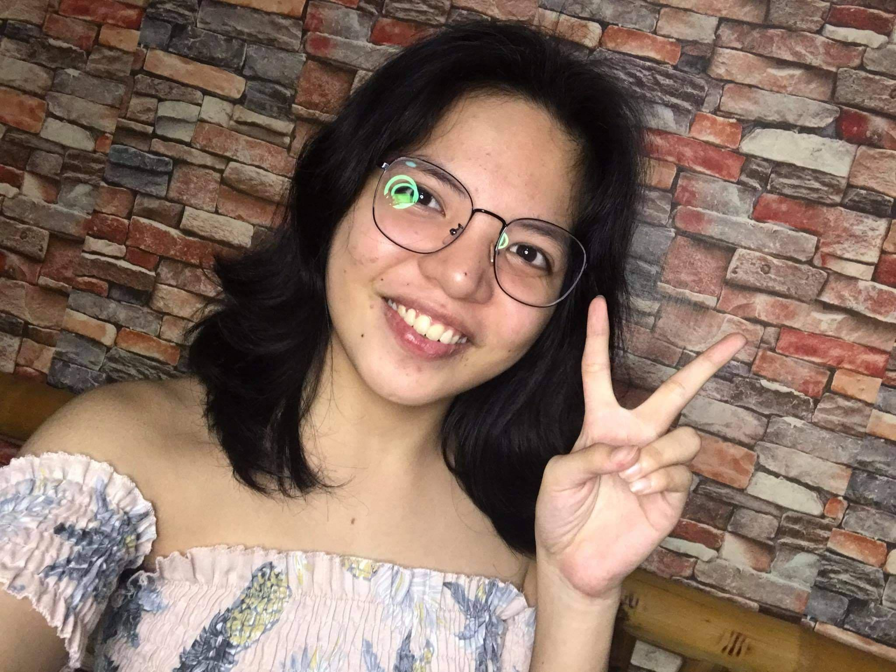
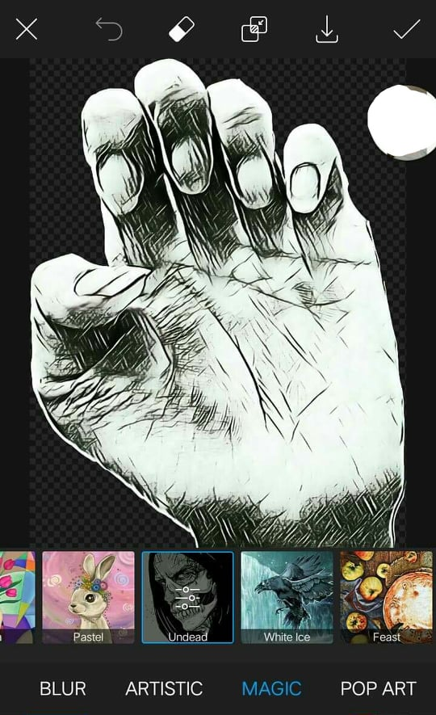
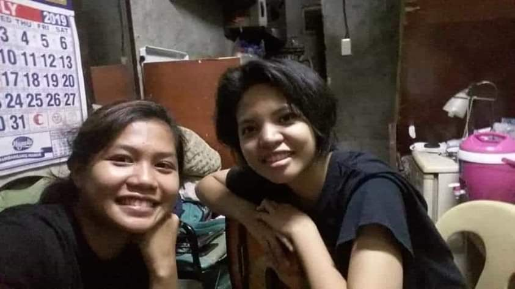
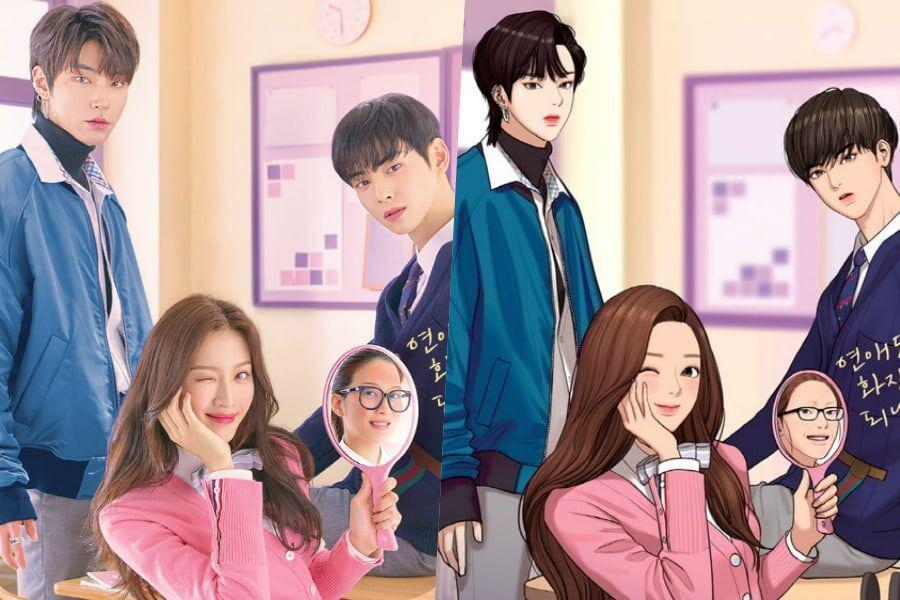
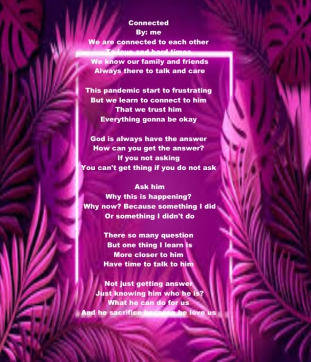
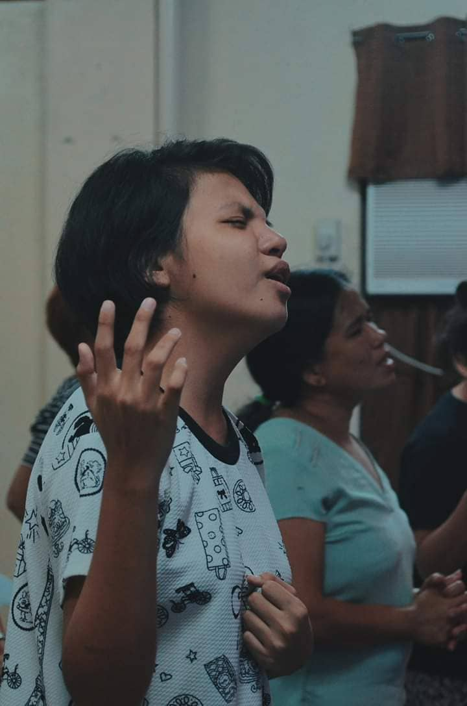
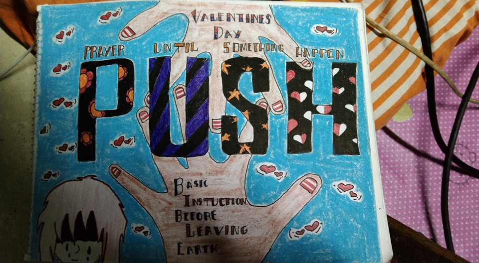
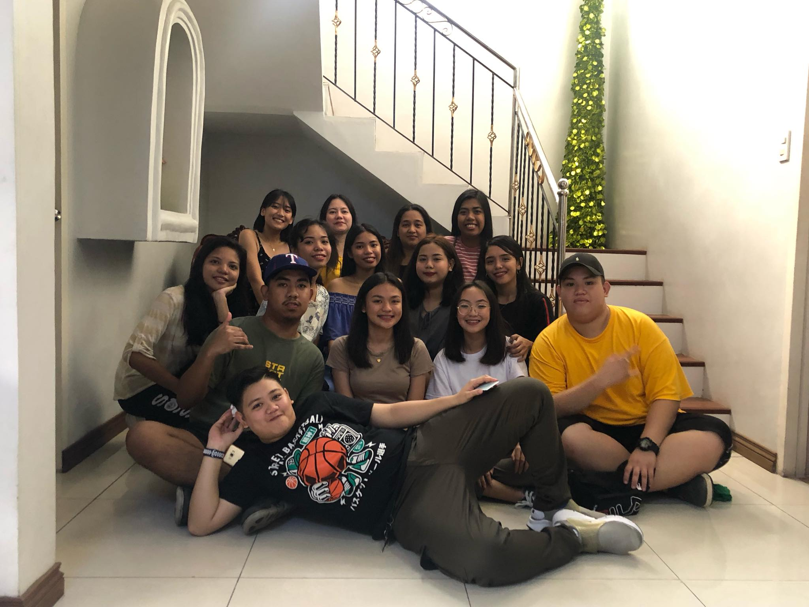

Hi I'm Jastene Pagaduan
19 years old
BSIT 1B

Family Background
My Mother's Name is Judith Pagaduan and my Father's Name is Jimmy Pagaduan,we are three of his sibling. I'm second of may sibling very queit perosn but when with my friends i always start the noisy.
and my sister has graduate in University of Makati and my little sister is only in senior high grade 12. My father do is engineer and my mother is house wife.
Hobbies
1.Edit

2.Guitar

3.Relaxing
4.Listening to Music

5.Watch Kdrama

6.Eating
Skill/Talent
1. Write poem

2. Singing

3. Drawing

Strength & Weakness
My strength is trying best to learn and understand the code and encourage myself to push myself hard
to my best, my weakness is some people say i can't do it I just give up and I'm not good on math computation.
Career or Job position
When i graduate what my job or career will be I think Software developer or Web developer, maybe I
will continue second dream being lawyer becuase two thing I like is IT and be come lawyer someday. I don't know I just like both career I want
somehow we don't know what will happen to the path we have choosen right it will continue or different path always have second choose but IT is my first choosen
I not force to do IT I enjoy more, more than i expect.
